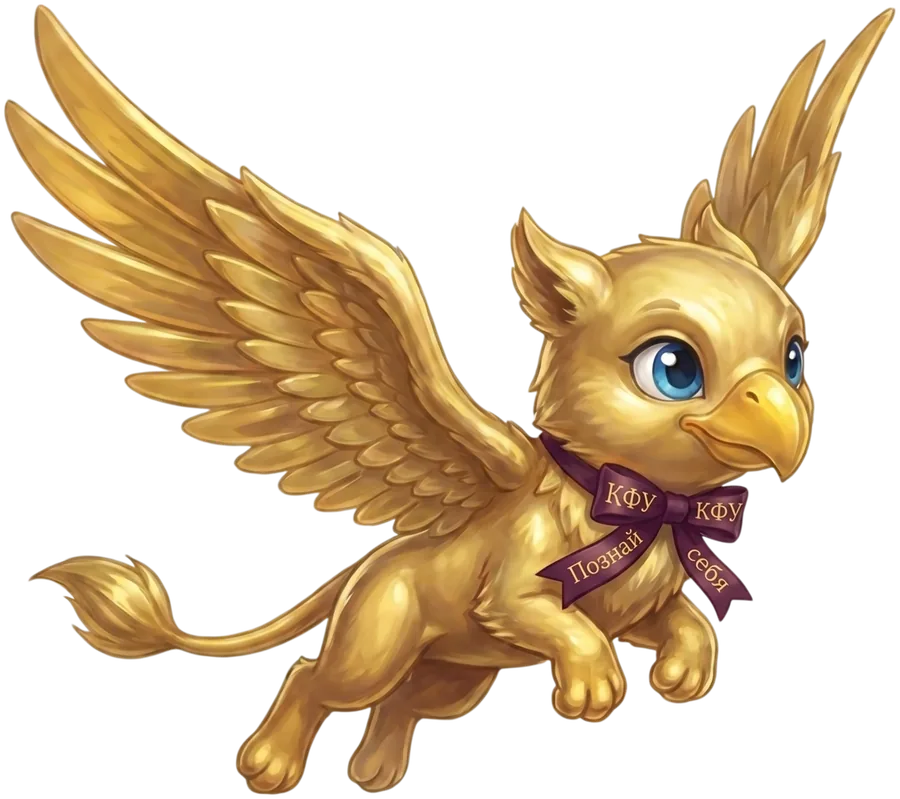
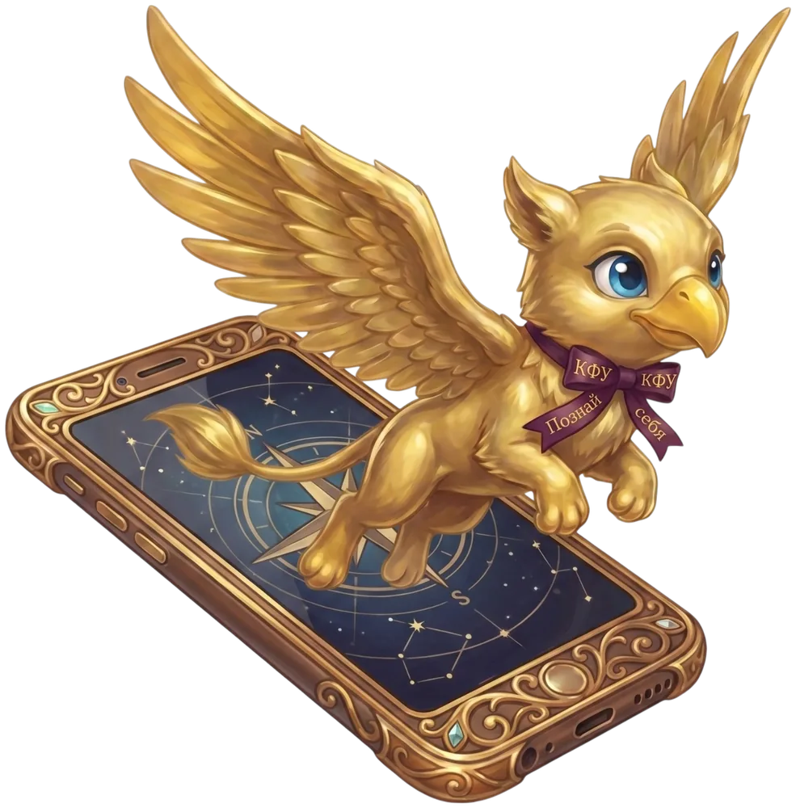
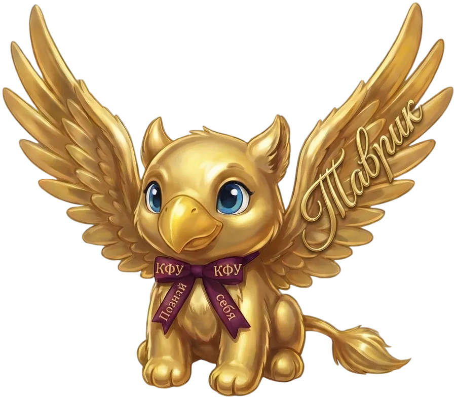

твой помощник в жизни университета
Золотой грифон КФУ. Знаю всё о жизни университета — и всегда на связи.

Пары, общежитие, стипендии, история вуза — отвечу за секунду, без очередей в деканат.

Чтобы показывать твоё расписание, выбери группу: